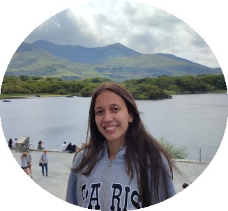
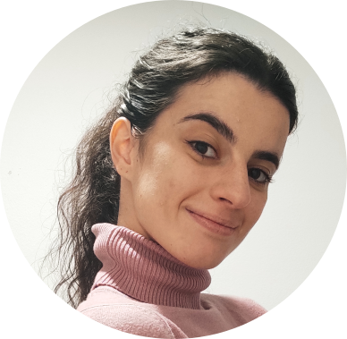
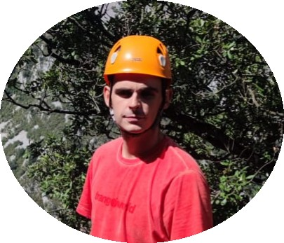
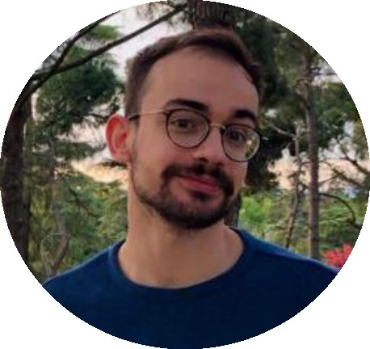

Lab members
Here you can meet the whole team!
PhD students

PhD student
Mamen Nogales Valenciano
Mamen graduated in Sanitary Biology in University of Alcalá and has Master in Biochemistry from UCM. She is currently a PhD student of Mitoglia Lab with a CAM fellowship.
Her project focuses on exploring how mutations in LRRK2 gene affect microglial biology. She is working with the G2019S knock-in strain and she is performing primary microglial cultures as well as in vivo approaches to better understand how this gene may affect microglial biology. If you don´t find Mamen in the lab, for sure she will be dancing bachata some where in Madrid… And if not, maybe playing Secret Code while having some ice-cream.

PhD student
Lucía Íñigo Catalina
Lucía is a Biochemistry graduate from UCM and holds a Master’s in Molecular Biomedicine from the Autonomous University of Madrid (UAM). Lucía is a PhD student in the lab under the supervision of Noemí Esteras and Lisa Rancán.
Lucía´s project focuses in understanding how different mutations in Tau associated to frontotemporal dementia can affect neuronal functionality, focusing on mitochondrial biology and calcium signaling. She is developing different experimental approaches, including neuronal cell lines, primary cultures and patient-derived neuronal lines obtained from iPSCs. Apart from neurons and mitochondria, she loves sports, crime books and nature. She also loves spending time in her village located in Guadalajara with family and friends.

PhD student
María Ortiz Cabello
María is a Biochemistry graduate from UCM and holds a Master’s in Traslational Medicine from the Complutense University of Madrid (UCM). María is a PhD student in the lab under the supervision of Elisa Navarro, Noemí Esteras and Sergio Paredes.
María is trying to figure out the role of Nrf2 in different pathological conditions, including LRRK2 and Tau-related disorders. She combines neuronal and glial primary cultures with in vivo models to understand how Nrf2 gets dysregulated in disease and to find new ways to promote neuroprotection. Beyond Nrf2, María loves concerts and music festivals—or just hopping on a plane to anywhere in the world. Even though she loves living in Madrid, she always feels the need to escape back to her hometown, Cáceres.

PhD student
David Jiménez Galán
David is a PhD student in the lab under the supervision of Noemí Esteras.
David is focusing on studying the effects of Tau protein in neuronal functionality. He works with neuronal cell lines carrying different Tau mutations with the aim of exploring how Tau protein alters mitochondrial biology and calcium signalling. Beyond Tau, David loves playing table tennis and he is passionate about Real Madrid and nature. He also loves spending time with his friends!
PhDs defended in the lab

PhD defended
Santiago Rodríguez-Carreiro
Santi is a Biochemistry graduate from UCM and holds a Master’s in Neuroscience from the Autonomous University of Madrid (UAM). Santi defended his PhD in Biochemistry, Molecular Biology, and Biomedicine at UCM in 2025.
His doctoral research focused on Parkinson’s disease and explored the endocannabinoid system as a potential therapeutic avenue, employing diverse methodologies such as cell cultures, animal models and histological and biochemical assays.
Alumni
Master student
Sara Carmona Lorenzo
Sara carried out her end-of-degree and Master projects in the lab studying the Nrf2 pathway in the cotext of Parkinson´s disease. She succesfully completed her project ESTUDIO DE LA VÍA NRF2 COMO DIANA FARMACOLÓGICA in 2024-2025.
Master student
Sara Pardo Calderón
Sara has a degree and Master in Biochemistry from the UCM. Sara successfully completed her Master project in the lab titled Investigating the role of GPR55 in Parkinson´s disease under the supervision of Elisa Navarro (2023-2024).
Master student
Irene Rodrigo Herrero
Irene has a Master in Neuroscience from the UCM. Irene successfully completed her Master project in the lab titled Evaluating the activation of Nrf2 for the treatment of frontotemporal dementia associated to Tau under the supervision of Noemí Esteras (2023-2024).
Undergraduate student
Alicia Caro
Alicia has a degree in Biochemistry from the UCM. Alicia successfully completed her end-of-degree project in the lab titled Studying the role of LRRK2 in the microglial inflammatory response under the supervision of Elisa Navarro and Jorge Montesinos (2023-2024).
Undergraduate student
Leire García Megía
Leire has a degree in Biochemistry from the UCM. Leire successfully completed her end-of-degree project in the lab titled Role of LRRK2 and lipid metabolism in the activity of microglial cells under the supervision of Elisa Navarro and Jorge Montesinos (2022-2023).
Master student
Musab Al-Abrash Ghalyoun
Musab has a degree in Veterinary and Neuroscience Master from the UCM. Musab completed his final project of the Master in the lab titled Characterization of a new model of Parkinson´s disease based in alpha-synucelin injection under the supervision of Elisa Navarro (2021-2022).